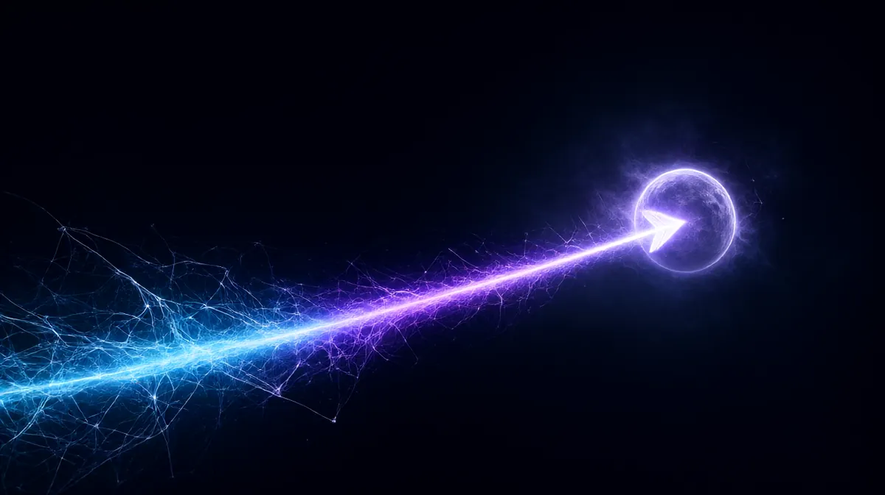

От мечты к цели: как не бросить на полпути
Мечта — это образ желаемого будущего. Цель — мечта с адресом и сроком. План — цель, разложенная на шаги. Многие застревают между этими уровнями: мечтают, но не ставят цель, или ставят цель, которая им не принадлежит.

Психолог Петер Голлвитцер показал, что простые «планы реализации» в формате «если X — то я сделаю Y» заметно повышают шанс довести намерение до действия. Мозг заранее связывает ситуацию с действием, и решение не нужно принимать каждый раз заново.
Габриэле Эттинген добавила важное: одно позитивное мечтание может даже снижать энергию для действия. Лучше работает «мысленный контраст» — представить желаемое, затем честно посмотреть на главное внутреннее препятствие и составить план, как его обойти.
Ещё один фильтр — истинность цели. Цели, которые совпадают с вашими ценностями и интересами (а не навязаны «так надо»), по данным теории самодетерминации, поддерживают мотивацию дольше и меньше истощают.
Практический вывод: проверьте цель на «своё ли это», найдите внутренний тормоз и закрепите первый шаг на ближайшие 24 часа. Маленький шаг сегодня важнее идеального плана на год.
Отметьте, что узнаёте в себе
Отмечено: 0 из 5.
Тест «Колесо баланса» · 2 минМечта — препятствие — план
- Запишите желание одной фразой.
- Представьте лучший результат и опишите его в деталях.
- Назовите главное внутреннее препятствие (не внешнее!).
- Составьте план: «Если появится [препятствие], я сделаю [действие]». И один шаг на 24 часа.
Модуль 6 «Квантовый скачок от мечты к цели»
От мечты — к проверенной цели и конкретным шагам. Модуль соединяет вдохновение и системные действия, чтобы цель вела вас, а не…
Источники
- Gollwitzer P. M. Implementation intentions: Strong effects of simple plans (1999)
- Ryan R. M., Deci E. L. Self-determination theory (2000)
Статья носит просветительский характер и не заменяет консультацию врача или психотерапевта. Подробнее.
Связанные темы
 2:23Страхи и тормоза · 2 минСтрах успехаПочему мы тормозим за шаг до цели. Как страх успеха маскируется под лень, «не время» и внезапные болезни проектов.✓ прочитано2:24Мозг и мышление · 2 минНейропластичность и привычкиМозг меняется всю жизнь. Сколько на самом деле формируется привычка и почему «21 день» — миф.✓ прочитано2:43Самоценность и продуктивность · 2 минПроявленность: страх быть замеченнымПочему так трудно рассказать о себе, выложить пост, выйти в эфир. Эффект прожектора и другие причины невидимости.✓ прочитано
2:23Страхи и тормоза · 2 минСтрах успехаПочему мы тормозим за шаг до цели. Как страх успеха маскируется под лень, «не время» и внезапные болезни проектов.✓ прочитано2:24Мозг и мышление · 2 минНейропластичность и привычкиМозг меняется всю жизнь. Сколько на самом деле формируется привычка и почему «21 день» — миф.✓ прочитано2:43Самоценность и продуктивность · 2 минПроявленность: страх быть замеченнымПочему так трудно рассказать о себе, выложить пост, выйти в эфир. Эффект прожектора и другие причины невидимости.✓ прочитано